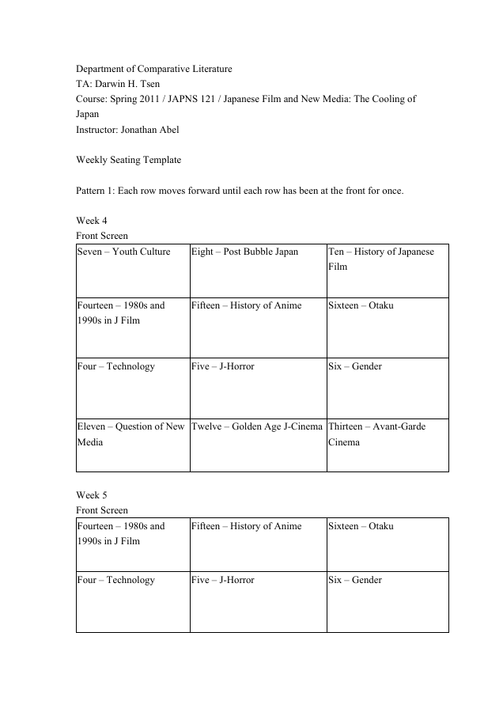
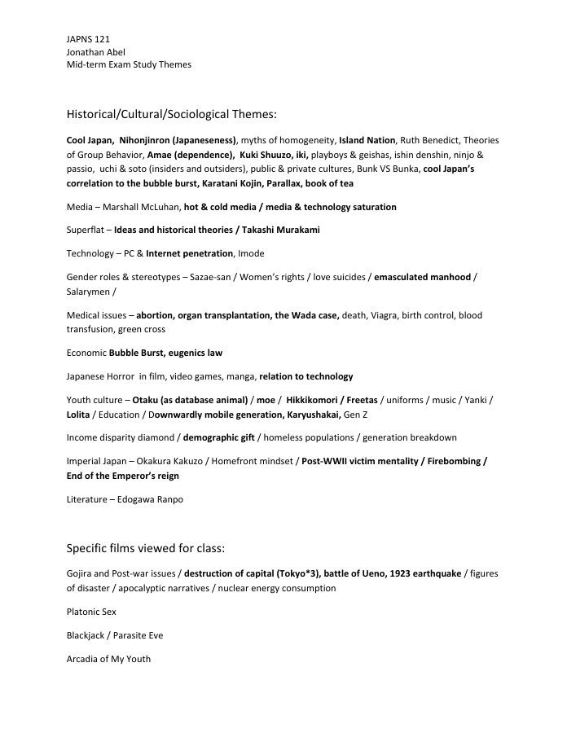

Docs, Events, & Links

CHECK HERE FOR COURSE DOCUMENTS
DOCUMENTS, HANDOUTS, & LINKS
Have a look at last year’s group projects to garner ideas. HERE.
DOWNLOAD A COPY OF THE SYLLABUS
Check the schedule page of the website for the most up to date info.
last updated 1/27/11
DOWNLOAD A COPY OF THE GROUP PROJECT GUIDELINES
last updated 1/8/11


Darwin’s handy dandy Seating Chart
last updated 2/1/11
DOWNLOAD A COPY OF THE GROUP PROJECT RUBRIC
last updated 1/31/11

Darwin’s handy dandy Study Guide
last updated 2/28/11
Your mid-Term bonus questions... 5 of these will be on the test as bonus.
last updated 2/28/11
Your Final Exam Questions.
25 of these will be selected for inclusion on the Final. Be careful some of the answers you provided to your own questions were incorrect.
last updated 4/26/11
Announcement from the Asian Studies Program
Asian Studies
ASIA 100: This course is being offered online, via World Campus. Required for the Asian Studies major and minor. Fulfills GH, IL, and Other Cultures requirements.
Chinese Language and Culture
Summer Intensive Program (June 13-July 8, July 11-August 5) allows students to complete one year of Chinese in eight weeks. CHNS 001, 002, 003, and 110 (4th-semester) are all offered.
CHNS 120: Summer Session 1 (5/16-6/24), Introduction to Chinese Literature and Culture. Fulfills requirements for the Chinese major, and elective credit for the Asian Studies major/minor. Fulfills GH and IL requirements.
Japanese Language
Summer Intensive Program (June 13-July 8, July 11-August 5) allows students to complete one year of Japanese in eight weeks. JAPNS 001, 002, 003, and 110 (4th-semester) are all offered.

In keeping with our ongoing policy of offering optional bonus opportunities...
You have the option of going to this event and emailing Darwin a single page response paper by 4/15 for bonus credit to be averaged with your quizzes.